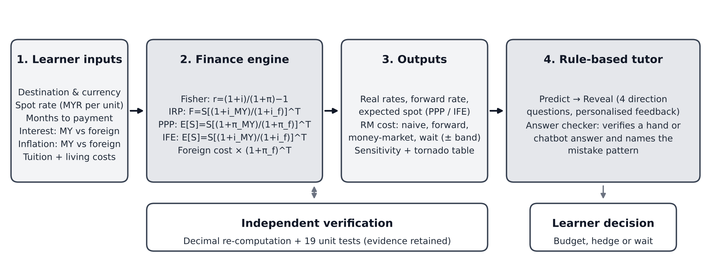
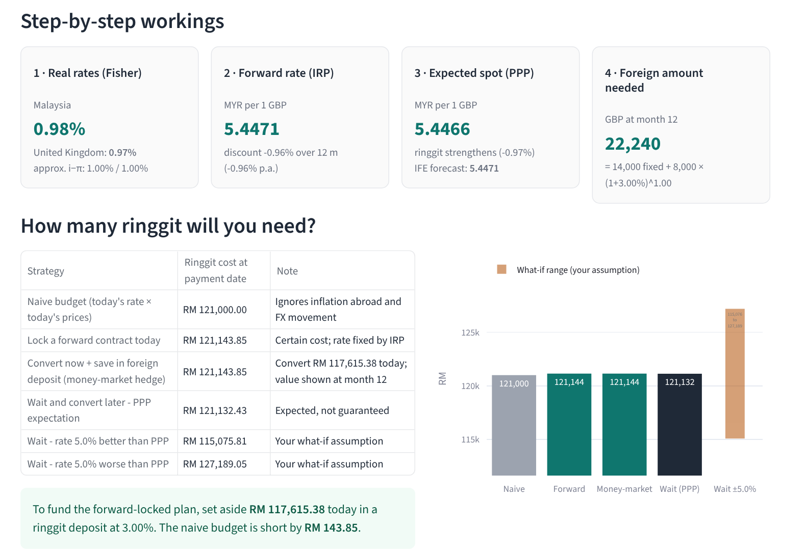
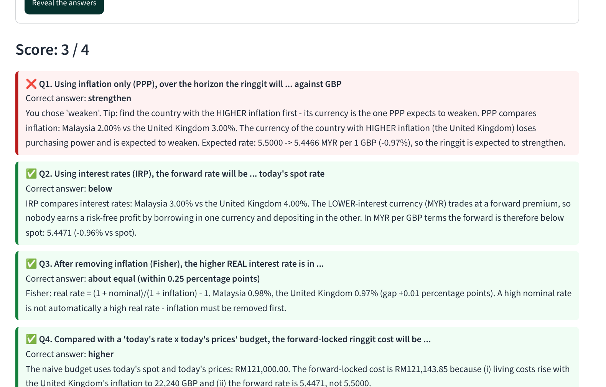
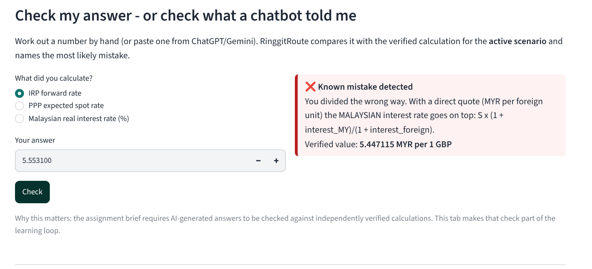
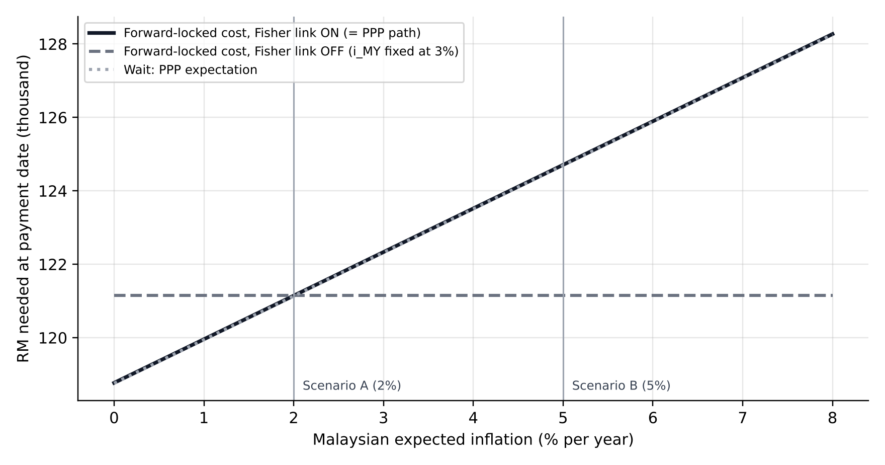

01Issue & background
Overseas study is billed in pounds, dollars or yen but funded from ringgit savings. About 59,000 Malaysian students were studying abroad in higher education in 2019 (UNESCO estimate reported by British Council, 2022). The ringgit cost of the same programme changes whenever exchange rates move.
02Learning problem
Non-finance students budget with one number: today’s rate × today’s price.
- Prices rise: foreign living costs grow with foreign inflation.
- Direction confusion: learners cannot say which way the ringgit should move, or why.
- Nominal ≠ real: deposit rates are compared without removing inflation.
- Unchecked AI: chatbot numbers cannot be verified by the learner.
03Target users
- Primary: non-finance university students in Malaysia paying overseas study costs within 1–36 months (exchange, transfer, postgraduate).
- Secondary: parents and sponsors; university mobility offices running pre-departure briefings.
- Tertiary: IFM lecturers needing a personal, interactive example.
04Objectives
- Connect interest, inflation and FX via Fisher, IRP, PPP, IFE (+ hedging).
- Show inputs, formulas, assumptions, outputs and plain-language meaning.
- Teach with Predict → Reveal and an answer checker.
- Verify every figure independently; assess marketability.
05Proposed solution & workflow
A working web prototype (Python · Streamlit). Calculation first, explanation second: every sentence the tutor shows is generated from the finance engine’s numbers.

Six tabs: ① Learn the triangle · ② Predict → Reveal · ③ Budget planner · ④ Sensitivity lab · ⑤ Check an answer (hand or chatbot) · ⑥ Limits & sources.
06Prototype screenshots



07CLO3: interest ↔ inflation ↔ FX
S = MYR per 1 foreign unit (per 100 JPY); higher S = weaker ringgit. T = months/12, annual compounding.
- Higher MY inflation → ringgit expected to weaken (PPP); nominal rates rise (Fisher).
- Lower MY interest rate → forward below spot in MYR per foreign unit (IRP).
- IFE = PPP only when real rates are equal.
08Illustrated calculation — Scenario A
ILLUSTRATIVE DATA UK, 12 months · S 5.5000 · i 3% vs 4% · π 2% vs 3% (MY vs UK)
(UK 0.97%)
5.5×1.03/1.04
5.5×1.02/1.03
14,000+8,000×1.03
| Ringgit cost at payment date | RM |
|---|---|
| Naive: 22,000 × 5.5000 | 121,000.00 |
| Forward hedge: 22,240 × 5.447115 | 121,143.85 |
| Money-market hedge (convert today, hold GBP) | 121,143.85 |
| Wait — PPP expectation | 121,132.43 |
| Wait — what-if ±5% band (user assumption) | 115,075.81 – 127,189.05 |

09Change of input & sensitivity
Scenario B: MY inflation 2% → 5%, iMY → 6.03% (Fisher). Forward 5.4471 → 5.6073; ringgit flips from +0.97% stronger to 1.94% weaker; cost +RM 3,563.05 to RM 124,706.90. RM to set aside today stays RM 117,615.38.
Sensitivity (±1 pp): +1 pp MY inflation (Fisher-linked) adds ≈ RM 1,188; +1 pp UK inflation raises the forward cost (+RM 435.77) but lowers the PPP cost (−RM 733.20).
10Scenario C — theories disagree
Japan, 6 months, MYR per 100 JPY. Real rates 0.98% (MY) vs −1.71% (JP). IFE/forward 2.9322 → ringgit weakens 1.11%; PPP 2.8929 → strengthens 0.24%. Forward cost RM 35,514.28 vs PPP expectation RM 35,038.46 — the gap is the real-rate differential, not a free saving.
11Main findings
- Inflation sets the direction of the ringgit (PPP); interest rates set the price you can lock (IRP).
- Forward = money-market hedge: no free lunch. Hedging buys certainty, not a cheaper expected cost.
- Fisher-consistent rates leave the ringgit needed today unchanged when inflation rises.
- When real rates differ, IFE and PPP can point opposite ways.
- Verified: 36/36 independent Decimal checks and 19/19 unit tests pass.
12Expected learning benefits
Correct direction of each effect; nominal vs real rates; realistic budgets; ability to check AI answers. Benefits are expected; a pre/post quiz with 10–15 students is planned — no user-testing results are claimed.
13Marketability
| Alternative | Gap → RinggitRoute |
|---|---|
| Converters (e.g., Wise) | Today’s rate only → explains future rates |
| Bank calculators | No teaching → transparent formulas |
| Textbooks / videos | Generic → learner’s own trip + feedback |
| General chatbots | Unverified → verified engine + checker |
Adoption: mobility-office pilot → IFM tutorials → student societies → institutional licence. Feasible: free tools and hosting; engine reusable behind a mobile app.
14Limitations & next steps
Illustrative rates; constant annual rates; covered IRP assumed; PPP weak in the short run (Rogoff, 1996); forward rates biased (Fama, 1984); CIP deviations exist (Du et al., 2018). Next: live BNM data, instalments, Bahasa Melayu, LLM explanations bound to the verified engine.